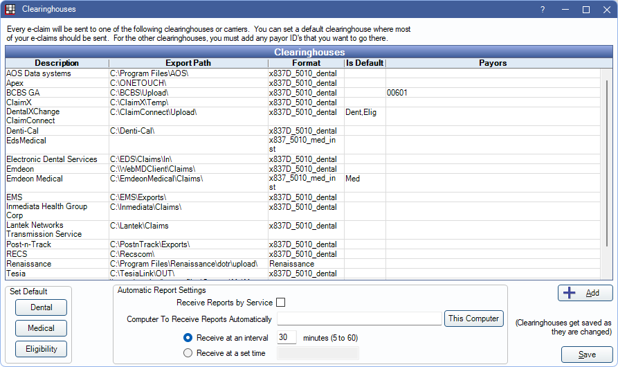
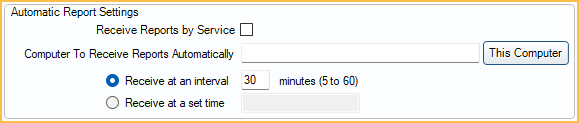

Clearinghouses
Open Dental integrates with a number of dental and medical clearinghouses for sending e-claims.
In the Main Menu, click Setup, Family/Insurance, Clearinghouses.
Clearinghouses are listed alphabetically. Click Add to create a clearinghouse that isn't listed. Double-click an existing clearinghouse to enter settings.
Recommended Dental Clearinghouses
These clearinghouses are recommended and also offer electronic attachments, electronic eligibility, and electronic billing (statements):
Additional Clearinghouses and Aggregators
These companies are known to work well with Open Dental:
- Ensora Clearinghouse (formerly Apex)
- Etactics
- Office Ally
- Post-n-Track
- Vyne Dental
Medical Clearinghouses
The following clearinghouses can be used to send medical claims:
- Electronic Dental Services - Medical: Users must also be using Electronic Dental Services - Dental.
Canada
These clearinghouses are integrated for Canadian users:
- ITRANS 2.0: Dentists only.
- Claimstream (TELUS / CCDWS): Hygienists only.
Puerto Rico
These clearinghouses are integrated for users in Puerto Rico.
- Inmediata
- Lantek
Direct Connections to Payers
Some payers offer direct connections integrated with Open Dental:
- BCBS Georgia E-Claims
- BCBS Nebraska E-Claims
- Colorado Medicaid E-Claims
- Denti-Cal
- Washington Medicaid E-Claims
Other Clearinghouses
The previously listed clearinghouses have an existing setup in Open Dental, however other clearinghouses can be added manually.
Automatic Report Settings
Automatic Report Settings can be set up to download reports from your clearinghouse reports (e.g., ERAs, acknowledgment reports, text reports).
Easily set a specific time or interval to download reports and choose a specific computer where reports are downloaded.